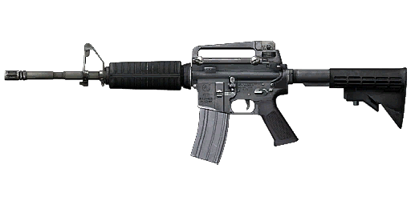
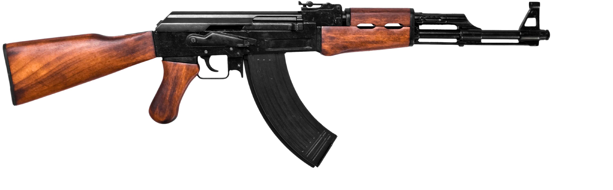

A játékról:
A játék egy FPS shooter, ahol botokat kell lelőni, mint minden
lövöldözős játékban.
A botok zombi kinézettel mozognak és támadnak rád, ha elég közel
mész hozzájuk.
2 féle fegyver található a játékban. Egy M4A1-es amerikai
fegyver, és egy AK-47-es orosz gépkarabély, melyekre még van
animáció is.
Található MINIMAP is a játékban, a zombikra, a karakterre is van
animáció.

